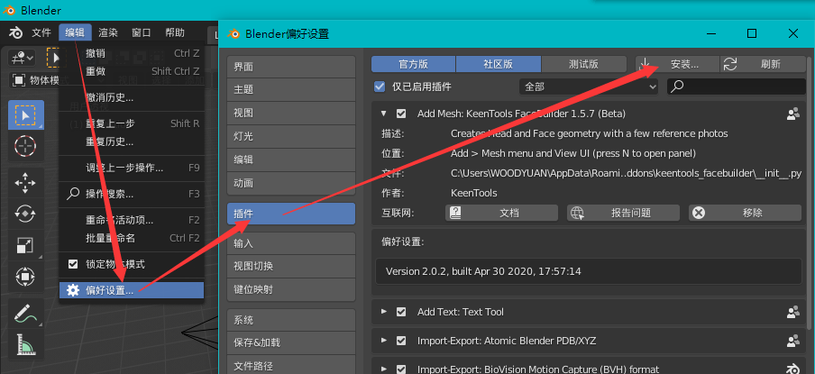
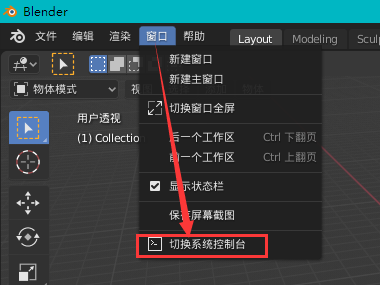
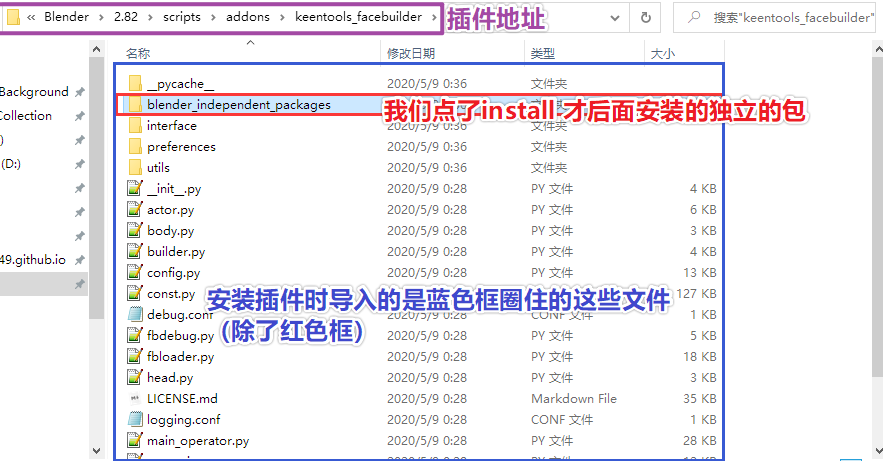
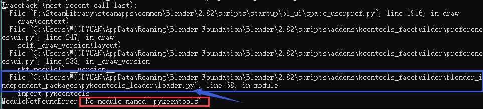
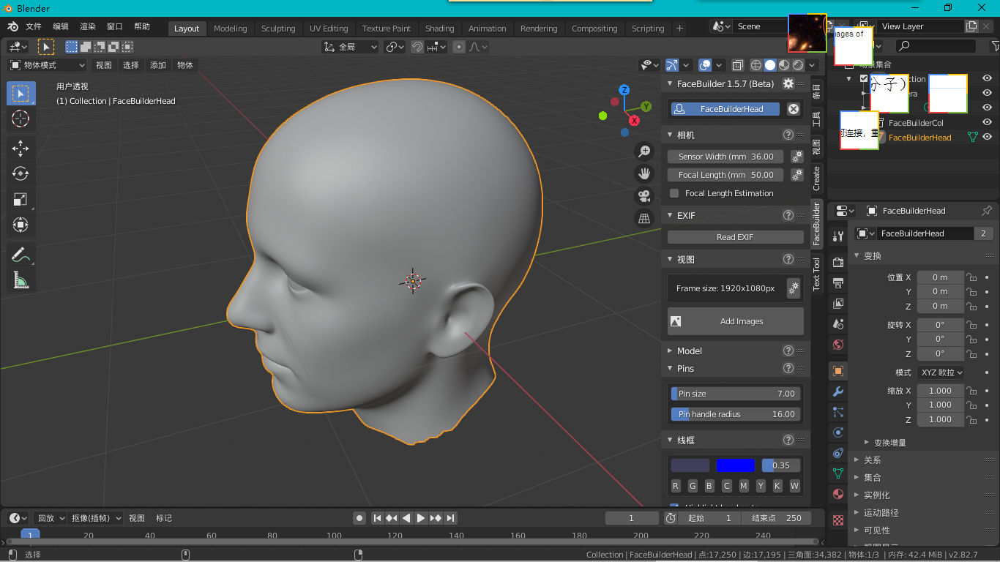

Blender 牛~
Facebuilder是啥😵¶
FaceBuilderadd-on for Blender, just as its sibling for Nuke, can help with building 3D models of human faces and heads using a couple of photographs. With FaceBuilder you don’t need to be an experienced 3D modeller to create a quality 3D model with clean topology. You start with getting a few photos with neutral face expression taken from different angles and then place a model on each of them to build a head or a face model. You can modify the model without leaving Blender with the procedural approach, so whenever you want to tweak something, the changes you’ve applied to the model will be applied again. The resulting model can be used for sculpting, animation or anything else inside Blender. You can also export the model from Nuke and Blender for further modifications in any other 3D software, for example for rigid-geometry tracking with GeoTracker or for tracking of facial gestures with FaceTracker in Nuke.@Facebuilder官网，https://keentools.io/facebuilder
如上所述
Facebuilder是一个可以用几张照片快速构建人头的3D建模软件(如Blender)的插件(add-on)。
听起来就很不错不是么。
让我们开始吧🏃¶
如果要开启下面的内容需要安装Blender，同时这个插件笔者在安装的时候出现了一个BUG(如果你下的是新版的话应该就不会有这个问题啦)。
安装插件（解决我碰到的小BUG）🏗¶
此BUG出现在Facebuilder1.5.7（Beta）里，构建后显示为Version 2.0.2这个版本。
可在官网下载插件的安装文件。
导入¶
首先调出导入插件的文件对话框，如下图操作即可。

选中下载好的压缩包，确定导入插件。我们可以看到插件的信息面板多了几个按钮，其实是因为这次导入其实只导入了插件的外壳，还有一个包要额外安装。先下载离线包，然后点install from disk导入即可。
报错与解决⚠¶
启用插件(就是插件前面的复选框勾上就好啦)，我们会发现插件启动后，但是插件的信息面板报了错，提示我们去查看系统控制台，这个时候我们调出系统控制台。

可以看到如下图的报错：

No module named ‘pykeentools’
如果读者们熟悉Python，就可以知道这个其实是Python的语法和报错，说的也很直白，就是没有模块叫做‘pykeentools’。那我们明明安装了插件，为啥没有没找到这个包呢。
首先我们梳理一下什么时候会出现这个报错：
- 你的确没去装这个包（明显我们尝试安装了，不是这个问题）
- 装了没装上或者装错了（这个有可能，我们一般比较菜，可能会操作错误）
- 点错了按钮，或者漏装了文件
- 程序猿代码写错了（也就是默认你没敲错指令，是程序猿编写的程序的锅）
- 包没有放到程序猿真正想要放到位置，代码写错了
我们可以看到上面的报错里有一些文件的地址，就像下面的图片一样：

那些地址指向的文件，实际上就是导入插件时工作的Python文件，而且是和报错相关的文件，我们去这个地址瞅瞅。插件结构如下：

我们会发现报错的文件位于我们后面才安装的包里，也就是blender_independert_packages里面的文件，其实这里就说明包的确导入了，但是没有被识别到。
好像有了些眉目，首先文件的确是在的，但是没被找到。回过头看报错，可以知道首次触发报错的是一个叫做loader.py的文件。这就有意思了，刚好我们就是导入(装载器，loader)的错误。

打开loader.py文件，检索一下就找到了import pykeentools 语句，这正是报错的那条导入模块的语句。
1 | import sys |
代码不是非常的复杂，大概看一下变量的英文就可知道是如何运转的了。
代码获取插件的安装目录
pkt_directory，然后调用系统包os把插件的目录添加到环境变量sys.path.append(pkt_lib_directory)，然后再导入pykeentools包import pykeentools
那问题来了，包的确安装到位置了（在目录里看到了pykeentools的文件夹其实就是包的本质），代码的确也写了导入这个包的指令了，那问题出在哪呢？自然应该是环境变量出问题了。
环境变量是什么呢，其实就是一个地址目录。如果一个程序文件调用另一个程序文件，只给了文件名来调用，如果被调用的程序文件不在这个文件的同一个文件夹，也不在环境变量里，系统就会报错，找不到该文件。有点像你在一个房间里叫：张三<sub>张三</sub>，那其他人肯定先看看这个房间里(同一个文件夹)张三在不在，如果不在就会去某些被允许去的地方(环境变量)再去找，找不到自然就报错了。
那我们先看看导入插件后的环境变量怎么样了吧。由于是Python，实现其实很简单，进入Blender的scripting工作区，就可以看到左下角的一个终端界面。
输入如下图箭头的两个指令：

import sys #导入
sys系统包，里面有可以调用系统命令的代码sys.path #调用sys包里的
path方法，就可以直接显示出系统变量啦
仔细一看最后一排的地址（环境变量按照，来分割不同的地址），和我们的插件的位置有些相似，却有些许不同。
去瞅瞅！

可以看到，基本上插件的内容都被复制到这里，和之前的loader.py的代码时相符的。但是仔细一看内部文件夹的地址，咦，好像有些不对劲。
1 | #程序导入系统的环境变量如下： |
显而易见，你既可以认为是地址导入环境变量时漏了_installation，也可以认为是文件夹的名字多了_installation。
这个差异导致系统在找一个不存在的文件夹，自然找不到pykeentools这个包。
给loader.py的代码添加了print语句来输入变量，也进一步证实了推测，的确少了_installation。

解决¶
- 由于Temp里的文件是从插件目录里复制过来的，我们修改插件目录里的文件夹就好啦。
1 | C:\Users\WOODYUAN\AppData\Roaming\Blender Foundation\Blender\2.82\scripts\addons\keentools_facebuilder\blender_independent_packages\pykeentools_loader\pykeentools |
进入上述目录里，把里面的pykeentools_installation文件夹改名成pykeentools，然后重启插件。
可以快捷键Win+R，然后输入%appdata%，就可以跳转到自己的C:\Users\WOODYUAN\AppData\Roaming\文件夹，然后再按照上面的路径找到插件修改即可）
- 修改代码，由于可能是
_installation的下划线被Python处理掉了导致整个字符都没了，而且该处理不在loader.py里，笔者就没有尝试修改代码了，给程序员提一个issue让他们自己解决吧。
如果你先禁用插件再启用，看到了类似这样的版本信息Version 2.0.2, built Apr 30 2020, 17:57:14。
恭喜你，BUG修复啦。
小试牛刀🔪¶
安装成功后，在建模的窗口的右侧，就有一个叫做FaceBuilder的选项，点一下，插件就可以用啦。

点一下Create a new head就会出现一个默认的人头啦。
